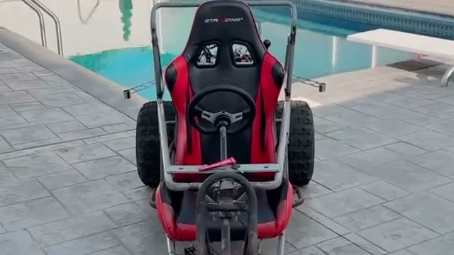
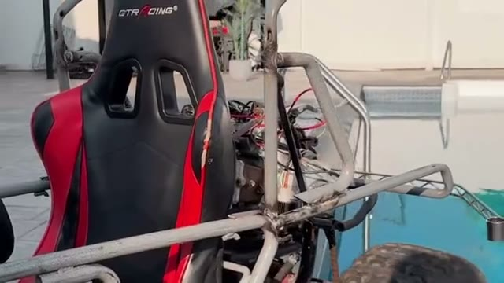
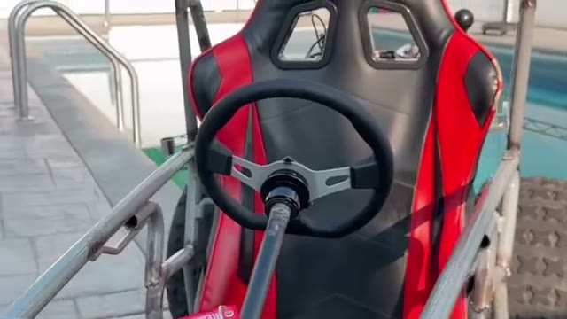

Personal Project — Autonomous Vehicle Platform
I'm rebuilding a go-kart into a fully autonomous platform — drive-by-wire steering and throttle, sensor fusion, and a ROS 2 software stack running the whole thing. Frame fabrication is done; I'm now wiring the electronics that give the chassis drive-by-wire control.
It's a hardware-up build: welded chassis first, then power distribution and motor controllers, then camera, LiDAR, and IMU sensing, a perception pipeline for environment mapping, and finally the autonomy stack — path planning and closed-loop control.
The clip above is a placeholder of the bare chassis at its current stage — a proper cinematic walkthrough is coming once there's more to show.



This one's still early. I'll post progress as sensing, perception, and the autonomy stack come online. Got questions about the build, or want to see something specific documented? Reach out — I'd love to talk about it.